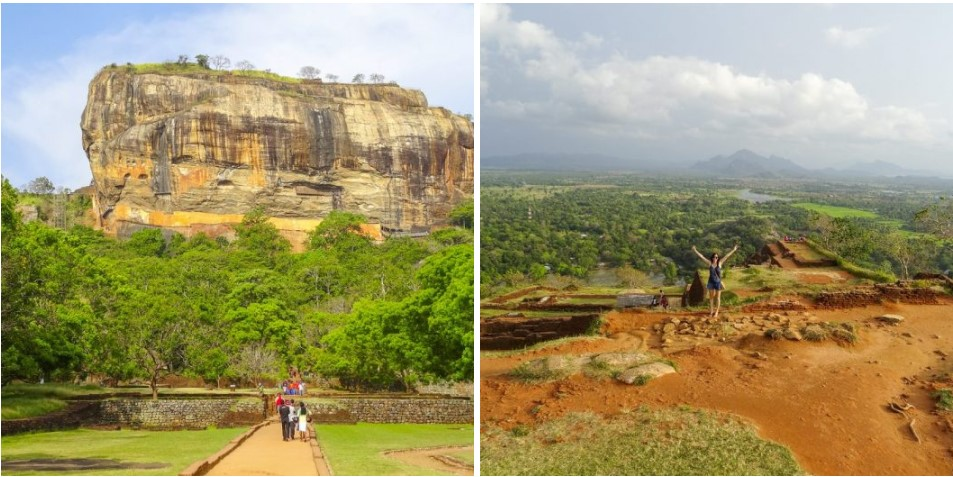
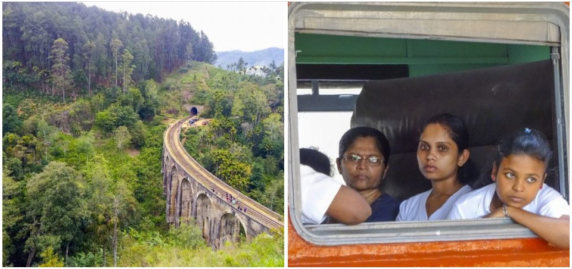
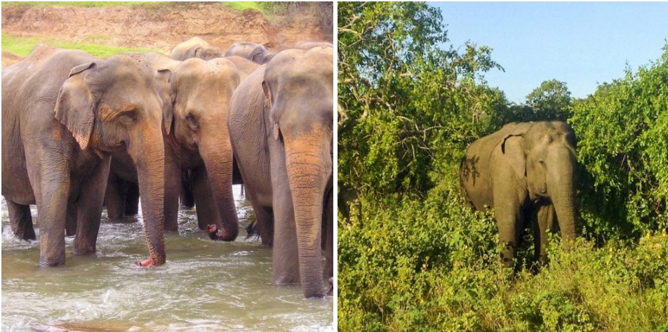

The Lion Rock of Sigiriya is one of the most famous highlights in Sri Lanka. The photogenic rock is over 200 meters high and is on the UNESCO World Heritage List. On top of this rock stood the palace of King Kasyapa in the 5th century. You can still see the ruins of the palace at the top, from where you have an amazing view over the vast green jungle. The rock owes its name to the lion, carved in stone, which guards the stairs. Now only the legs are left. At the foot of the rock you will find beautifully landscaped gardens, canals, a small museum and countless monkeys roaming around. The climb up, via almost 1900 steps, is tough but well worth it. Halfway up you can make a stop at the well-preserved murals of undressed women and at a smoothly polished mirror wall in which the king could admire himself.
Visit Sigiriya early in the morning when it is still cool. The climb is even harder in the afternoon heat. Although the late afternoon is a bit quieter in terms of visitors. From Colombo and Kandy you can also book a full day tour to Sigiriya, often including a visit to the Dambulla Cave Temples.
Take into account crowds and a fairly hefty entrance fee of approximately $ 30.
Discover the relaxation paradise of Sri Lanka; Ella. A village with a wonderful vibe in a beautiful green, hilly environment. Ella is known as a backpacker’s paradise, but is also a great destination for luxury travelers during their Sri Lanka tour. In the vicinity you will find tea plantations, waterfalls, viewpoints and the most beautiful hiking trails. Climb Ella Rock (about 2.5 hours of hiking) for a great view and also hike up on Little Adam’s Peak (about 1.5 hours) for even more panoramas. Furthermore, the Rawana Falls, the Nine Arch Bridge and some temples and tea factories are worth a visit. Moreover, Ella is known for a famous train ride! The train journey from Ella to Kandy (around 7 hours) goes straight through the tea plantations and is one of the most beautiful train journeys in the world.
Take beautiful walks in the surroundings of Ella, including Little Adam’s Peak and Ella Rock.
Take the train journey from Ella to Kandy (or vice versa) and enjoy the lush tea plantations where you can see the tea pickers at work. Tip: Make a stop along the way in Nuwara Eliya (see number 6) for a few nights to interrupt the train journey.
Do you want to spot elephants in the wild? Then Udawalawe National Park is the best place! The hundreds of elephants in the park ensure that there is a good chance of spotting a herd during a safari. But also crocodiles, monkeys, leopards, deer, swine and all kinds of reptiles and birds inhabit the Udawalawe savannas. Also visit the Elephant Transit Home, a shelter for injured and orphaned elephants. The home is supported by the British Born Free Foundation that fights animal suffering and by the Dutch non-profit organization World of Wildlife. The best time to visit is during feeding time.
Go on safari in Udawalawe. Jeep safaris can easily be booked online in advance, but you can also visit most hotels in this area or at the entrance to the park. Costs are around € 30 for a 6-person jeep regardless of the number of passengers. An extra tip is common. An organized safari tour to the Udawalawe National Park from Colombo or Galle is also easy to book online.
Entrance fees for the Udawalawe National Park are approximately € 15 per adult per day. Children 6-12 receive a 50% discount.
Kandy is the cultural center of Sri Lanka. The city is an important place of pilgrimage for Buddhists because of the famous Temple of the Tooth (Dalada Maligawa Temple). Here the sacred tooth of Buddha is kept in a golden stupa. During prayer you can take a look at the room where the tooth is kept and you can sometimes see hundreds of Buddhists making sacrifices, including many monks. In the temple complex you will also find several museums and important Buddhist relics. But Kandy has even more to offer. Visit the botanical gardens, the picturesque lake in the heart of the city, the atmospheric “old quarter” and the wood and precious stone workshops where you can buy handmade souvenirs. In the evening you can attend a traditional dance show.
Plan your visit to Kandy during the Perahera festival which is held every year in July or August. The 10-day festival revolves around the tooth of Buddha and is the most important festival in Sri Lanka. Processions take place every evening. These consist of beautifully dressed Kandy dancers, acrobats, fire dancers, musicians and decorated elephants. On one of the elephants, decorated with lights and colorful fabrics, a replica of the holy tooth is carried around the city. Special to experience during your holiday in Sri Lanka.
Book a day tour where you will see all the highlights of Kandy and the surrounding area. Check out an 8-hour tour here or this 12-hour tour.
Explore the highlands of Kandy, visit a tea plantation, admire the Ramboda Falls waterfalls, explore the Hakgala Botanical Gardens and take a walk or laze on Nuwara Eliya’s Lake Gregory with this 12-hour tour